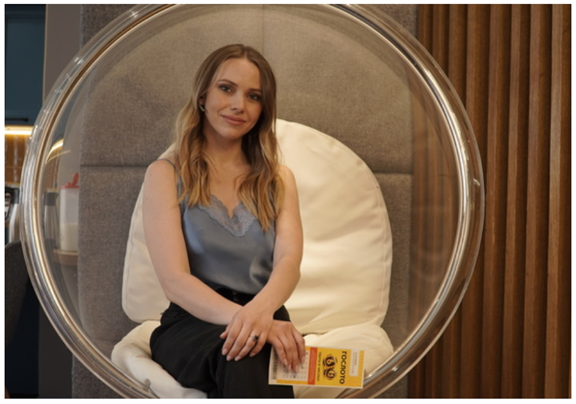

Победитель 1532-го тиража лотереи «Гослото «6 из 45». Дата тиража: 04 сентября 2015 года»
Ольга Устинова
Ольга Устинова — многодетная мама. «Все бытовые проблемы отошли на второй план, теперь я не беспокоюсь за будущее своей семьи», — делится обладательница суперприза лотереи.

Ольга считает оптимистичный настрой залогом успеха: «Я всегда верила, что моя жизнь сложится хорошо, даже в сложные моменты мыслила позитивно».
Об участии
Ольга Устинова родом с Дальнего Востока, работает косметологом. Она никогда не участвовала в лотереях, а счастливый билет получила случайно. Однажды жительница Амурской области зашла в киоск за прессой. У продавца не было сдачи, и Ольге предложили поучаствовать в лотерее. «Я впервые в жизни купила лотерейный билет и положила его в сумочку», — вспоминает девушка.
О выигрыше
Через несколько дней Ольга попросила друга проверить результаты тиража. Когда он озвучил сумму выигрыша, девушка решила, что это шутка. Звонок на горячую линию развеял её сомнения. Но окончательно победительница осознала случившееся, только когда средства оказались на банковском счету.
О жизни после
Ольга не стала сразу рассказывать о выигрыше и давать интервью, хотела сначала определиться, на что потратить внушительную сумму. В итоге купила квартиру в Подмосковье и переехала туда с супругом, приобрела загородный дом и обеспечила жильём родственников. Также она смогла воплотить свою мечту — открыла собственный косметологический кабинет. «Раньше у меня не было возможности вкладывать много средств в образование, а теперь я активно занимаюсь саморазвитием. Уже закончила курсы повышения квалификации, изучила новые техники», — рассказывает победительница. Благодаря выигрышу она обеспечит образование и своим троим детям.